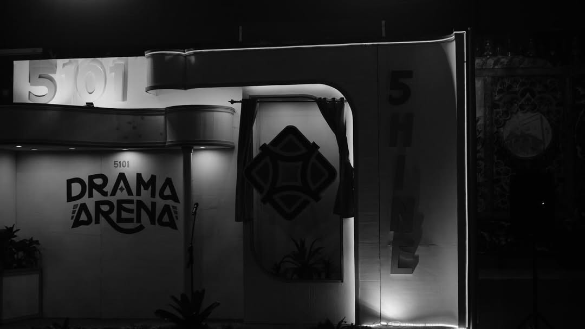
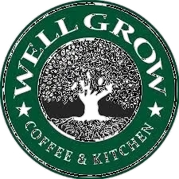
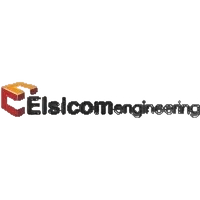
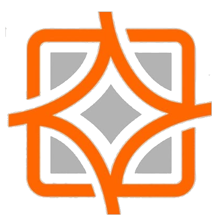
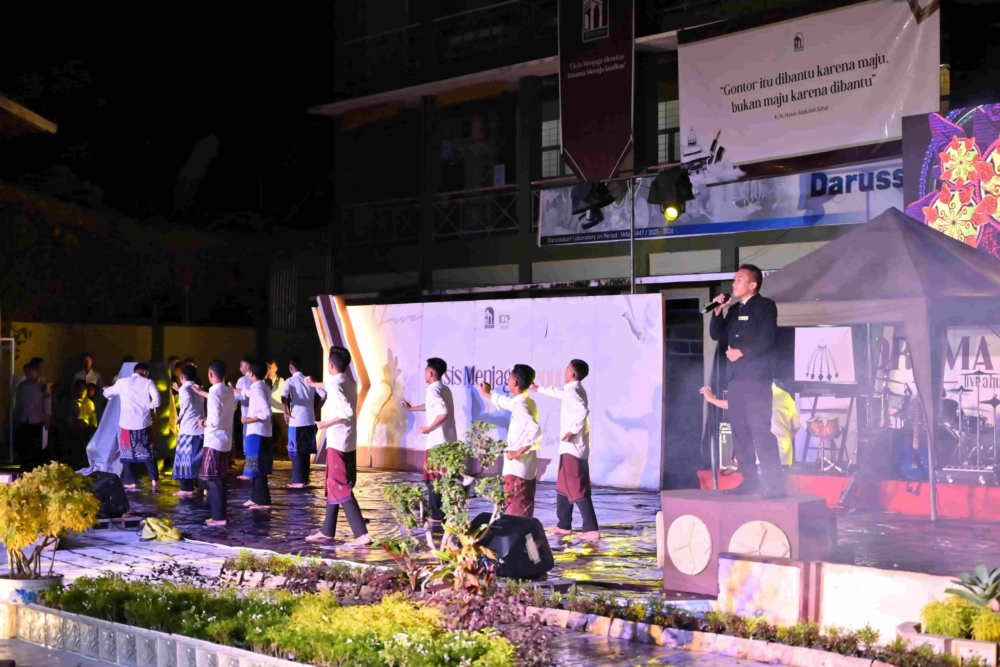
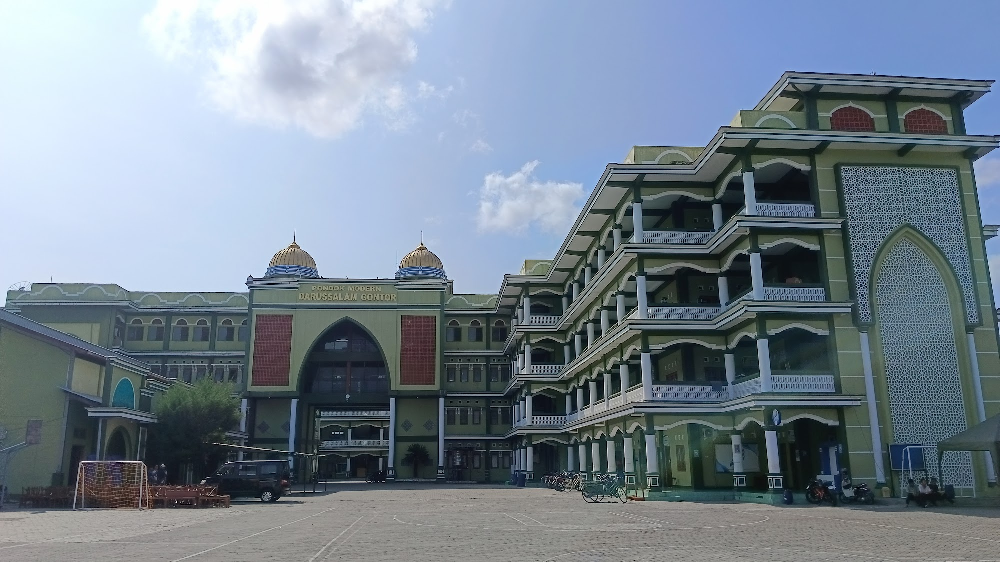
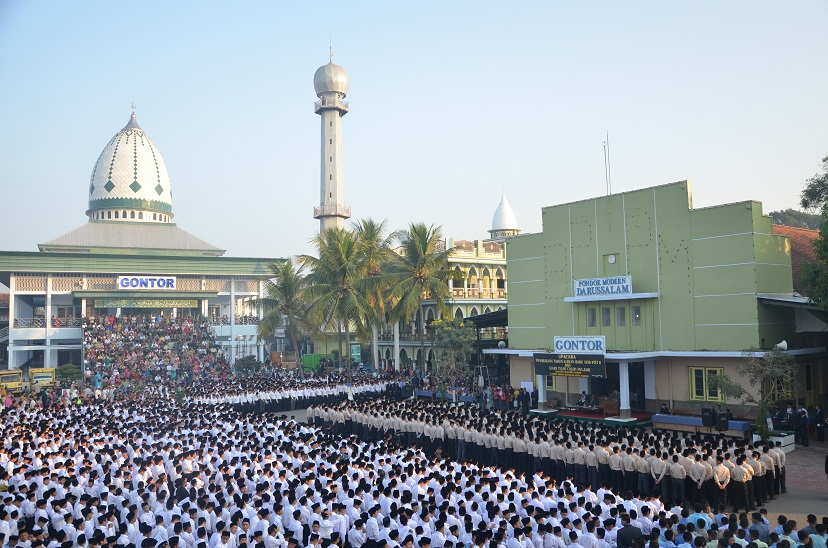

THE SHINING
DRAMA ARENA
"Nyalakan Api Kebersamaan Wujudkan Idealisme Kehidupan"
Sponsored & Supported By


FILOSOFI
LOGO
DRAMA ARENA 5101
Logo Drama Arena 5101 memiliki makna yang dalam dan mencerminkan nilai-nilai yang dijunjung tinggi oleh santri. Setiap elemen logo memiliki simbolisme yang kuat, merepresentasikan nilai-nilai Gontor.

4 SISI GARIS
Melambangkan Motto Pondok Modern Darussalam Gontor, yaitu : Berbudi Tinggi, Berbadan Sehat, Berpengetahuan Luas, dan Berpikiran Bebas.
4 SISI BERBENTUK KOTAK
Melambangkan lingkup persatuan dan kebersamaan yaitu tentang menyatukan perbedaan dalam bingkai yang sama, agar terjalin kebersamaan yang lebih kuat dan bermakna.
5 TITIK
Melambangkan Panca Jiwa Pondok Modern Darussalam Gontor: Keikhlasan, Kesederhanaan, Berdikari, Ukhuwah Islamiyah, Kebebasan.
CAHAYA
Cahaya (an-nūr) Seperti lampu kecil yang menyala dalam kegelapan, kelas 5 dituntut tidak hanya menyimpan cahaya bagi dirinya, tetapi juga menyalakan cahaya di sekelilingnya. Dengan ilmu dan akhlak, menjadi teladan bagi santri, dan dapat menjadi lentera bagi masyarakat, mampu membawa pencerahan di tengah kegelapan zaman.
TULISAN D
Mengambil dari kata "Drama".
TULISAN A
Mengambil dari kata "Arena".
KATA KATA PEMBIMBING
Nasihat dan pesan dari asatidz pembimbing untuk kesuksesan DA5101.


DRAMA ARENA 5101
Drama Arena Merupakan sebuah acara yang diselenggarakan oleh siswa kelas 5 Kulliyatu-l-Mu’allimin Al-Islamiyah (KMI) Pondok Modern Darussalam Gontor.
- Mendidik dan melatih kecakapan santri dalam kepemimpinan dan manajerial.
- Menggali serta meningkatkan potensi segenap siswa untuk diekspresikan dalam pagelaran seni.

APA ITU PMDG?
Pondok Modern Darussalam Gontor (PMDG) adalah lembaga pendidikan Islam yang berfokus pada pembentukan mental dan karakter peserta didiknya.

PONDOK MODERN DARUSSALAM GONTOR
Pondok Modern Darussalam Gontor (PMDG) terletak di Desa Gontor, Kecamatan Mlarak, Kabupaten Ponorogo, Jawa Timur, Indonesia. Didirikan pada tanggal 20 September 1926, bertepatan dengan 12 Rabi'ul Awwal 1345 H, oleh tiga bersaudara yang dikenal dengan sebutan "Trimurti": K.H. Ahmad Sahal, K.H. Zainuddin Fananie, dan K.H. Imam Zarkasyi. Saat ini, PMDG dipimpin oleh K.H. Hasan Abdullah Sahal, Drs. K.H. M. Akrim Mariyat, Dipl.A.Ed., dan Prof. Dr. K.H. Amal Fathullah Zarkasyi, M.A.
PMDG memiliki dua jenjang pendidikan. Pertama, Kulliyyatu-l-Mu'allimin Al-Islamiyah (KMI), yaitu program pendidikan tingkat menengah yang didirikan pada tahun 1936. Saat ini, KMI telah mendapatkan penyetaraan jenjang pendidikan dari Kementerian Agama Republik Indonesia dan Departemen Pendidikan Nasional, serta mendapatkan pengakuan dari berbagai lembaga pendidikan di dalam dan luar negeri. Kedua, Universitas Darussalam (UNIDA) Gontor, yaitu jenjang perguruan tinggi. UNIDA Gontor telah memiliki delapan fakultas untuk program sarjana.
Kurikulum di PMDG bersifat integratif, menggabungkan ilmu agama dan ilmu umum menjadi satu kesatuan. Pendekatan integrasi ini mencakup seluruh bidang kecakapan: intelektual, emosional, dan spiritual, serta meliputi aspek pengembangan pribadi santri, yaitu kognitif, afektif, dan psikomotorik.
Tenaga pendidik dan pengajar di PMDG merupakan lulusan KMI Gontor, UNIDA Gontor, serta perguruan tinggi lainnya di dalam dan luar negeri. Sementara itu, para santri berasal dari lulusan Sekolah Dasar dan Sekolah Menengah, yang datang dari berbagai penjuru tanah air maupun mancanegara. Saat ini, jumlah santri, guru, dan seluruh keluarga besar PMDG telah mencapai 28.000 orang di seluruh Indonesia.
Para santri tersebar di 20 kampus PMDG, yang terdiri dari 12 kampus putra, 8 kampus putri, serta kampus UNIDA Gontor.

PROFIL PESERTA ACARA
Acara ini diikuti oleh seluruh siswa kelas 5 Kulliyatu-l-Mu'allimin Al-Islamiyah (KMI) tahun ajaran 1446-1447/2025-2026, yang berjumlah 720 siswa.
PROFIL PENGUNJUNG ACARA
Acara ini akan dikunjungi lebih dari 5.000 orang penonton, di antaranya:
1. Seluruh Siswa KMI Pondok Modern Darussalam Gontor.
2. Seluruh Guru KMI Pondok Modern Darussalam Gontor.
3. Seluruh Keluarga Besar Pondok Modern Darussalam Gontor.
4. Tamu Undangan Lainnya
BENTUK ACARA
Dikemas dalam empat unsur utama 4E.
EDUCATING
Acara yang mengedukasi penonton dengan penampilan yang mendidik.
ENTERTAINING
Acara yang dirancang untuk memberikan kesenangan, hiburan dan inspirasi.
ELEGANT
Tampilan harmonis, berkelas dan berkualitas tinggi.
ENJOYABLE
Menciptakan suasana bahagia, rileks dan nyaman dinikmati.
MAIN BRANDING AND
LOGO INTRODUCTION
"Nyalakan Api Kebersamaan Wujudkan Idealisme Kehidupan"
Bismillahirrahmanirrahim
Assalamualaikum Warahmatullahi Wabarakatuh
Official Logo Drama Arena The Shining Five Art Collaboration Dengan tema "GONTOR MINIATUR KEHIDUPAN ISLAMI" dan bermotokan "Nyalakan Api Kebersamaan Wujudkan Idealisme Kehidupan".
Syukron Jazakumullah Khairan.
Wassalamualaikum Warahmatullahi Wabarakatuh.
IDE POKOK
DRAMA ARENA 5101
"URIP IKU URUP"
خَيْرُ النَّاسِ أَنْفَعُهُمْ لِلنَّاسِ
"Sebaik-baik manusia adalah yang paling bermanfaat bagi manusia."
Bermakna bahwa hidup sejatinya adalah tentang memberikan manfaat dan penerangan kepada sesama tanpa menyembunyikan kebenaran. Filosofi ini merupakan manifestasi ajaran Islam dalam budaya Jawa, yang menyadarkan kita bahwa kebenaran sejati dan aturan hidup berasal mutlak dari Allah, sementara manusia bertugas menyebarkan kebaikan tersebut selagi nyawa masih dikandung badan.
Sebaik-baik manusia adalah orang yang bermanfaat bagi manusia lainnya. Dari kutipan hadist tersebut selaras dengan ungkapan "Urip Iku Urup", sebuah ungkapan yang sering digaungkan di Pondok Modern Darussalam Gontor.
Dengan demikian kutipan dan ungkapan diatas bukan hanya sekedar tulisan saja tapi merupakan sebuah filosofi dan nilai-nilai yang memiliki makna yang dalam. Menjadi manusia bukan hanya sekedar hidup tapi perlu untuk menjadi teladan dan bermanfaat bagi umat manusia. Manusia berguna adalah manusia yang menebar bibit-bibit manfaat dan memiliki kegunaan bagi orang disekitarnya. Berguna bukan berarti diperdaya atau dimanfaatkan justru berguna adalah memiliki suatu hal yang dapat memberikan kebaikan dan kemaslahatan bagi manusia-manusia lainnya. Maka dari itu harapannya generasi-generasi penerus dapat menjadi manusia yang memiliki manfaat dan berguna bagi umat islam di seluruh dunia.
MASUKAN & HARAPAN
Kirimkan masukan atau harapan anda untuk mensukseskan acara ini.